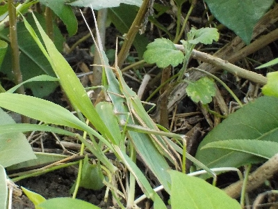
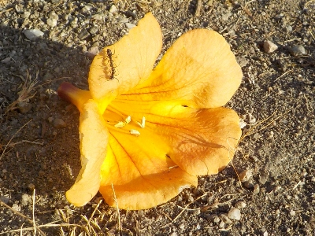
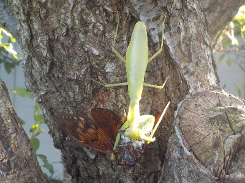
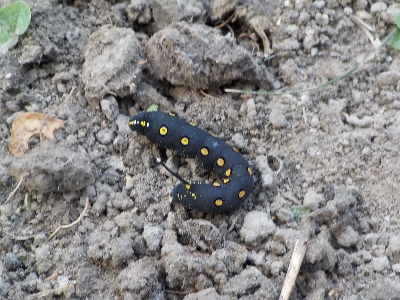
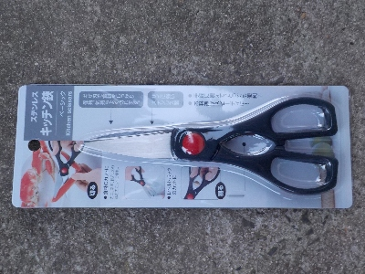

オンブバッタの写真を撮りました。
2024/08/31

なんか久しぶりにオンブバッタを見たので写真を撮りました。
人が近づいて逃げるときは分離して逃げればいいのに。
2024/08/31

なんか久しぶりにオンブバッタを見たので写真を撮りました。
人が近づいて逃げるときは分離して逃げればいいのに。
2024/08/18

何かやろうと思っていたわけではないですが、何もなく連休が終わりそうです。
だらだら過ごしたな。それはそれで幸せかな。
2024/08/18

蝉が大きな声で鳴いていたので、見てみるとカマキリに捕獲されていました。
自然なことです。
この前まで小さいカマキリがうろうろしていると見ていましたが、もうアブラゼミを食べるくらい大きくなったんですね。
2024/08/04

セスジスズメという名前の蛾の幼虫です。
今雑草を抜いているので、それらがなくなるのできっと野菜や花を食べに移動しますね。
2024/08/01

野菜の収穫用にハサミを買いました。園芸用よりもキッチンの万能ハサミの方が需要が多いので、コスパがいいんじゃないかと思い選びました。
ちょっと硬いものを切るとプラの部分が曲がって使いにくいですが、100均なので仕方ないのかな。
長く使えるといいです。
過去の日記
夏場の活動は朝と夕です。